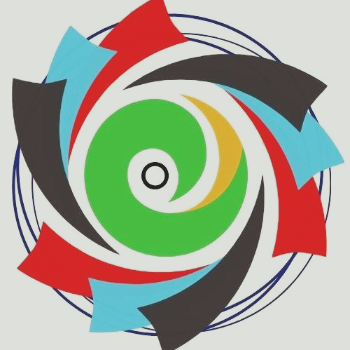

IIT BHILAI CULTURALS
BEAT HACKERS

A quick intro
That is it from this game which was about one guy going absolute bonkers and bananas to put us on the edge of our seats. This is Kumar Abhisekh Das lending a helping hand to Raju Peethala for the coverage of this game. Trust me, we are drained. You guys can munch more as the cricketing action continues. Kane Williamson: Probably, 85 percent of the game was clinical from us.